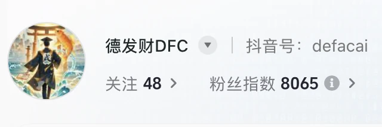
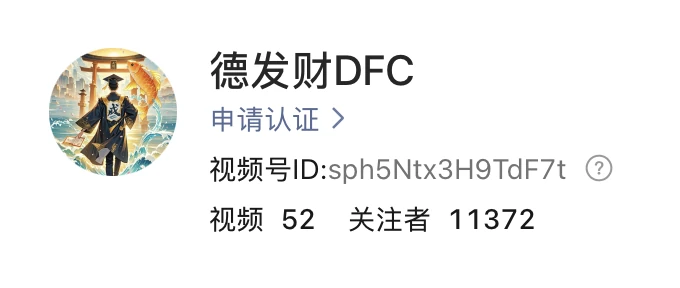
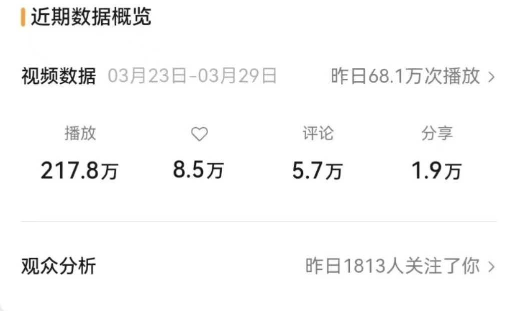
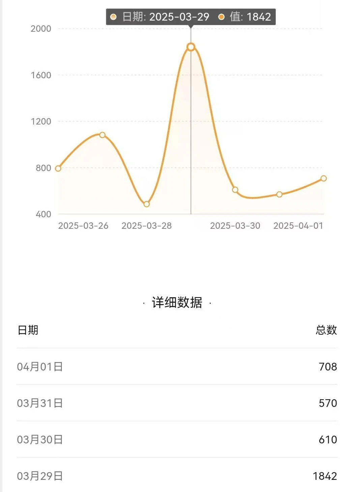
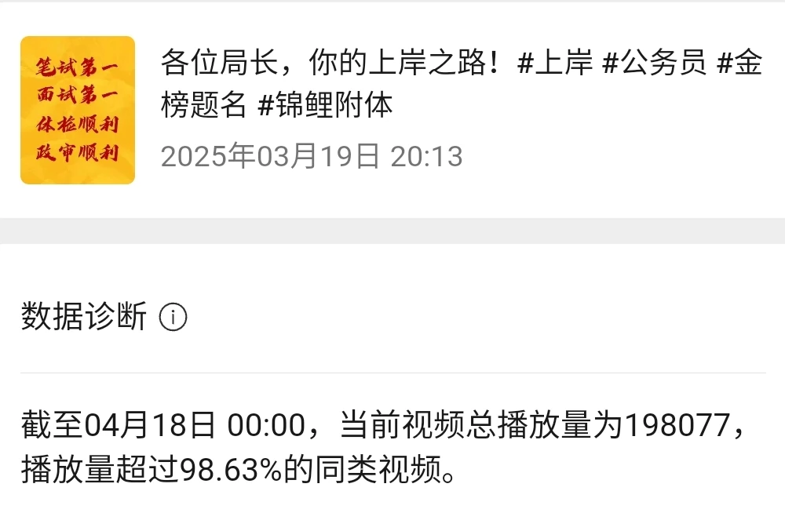
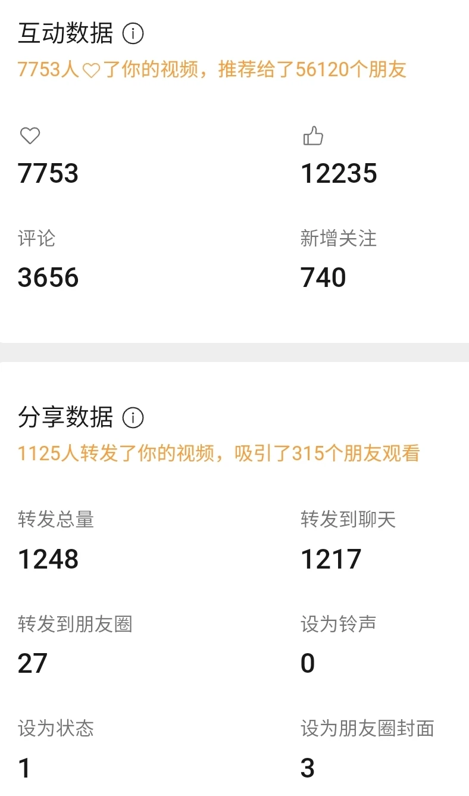

AI驱动个人IP冷启动：不到2个月自然涨粉2万+，爆款率提升5倍
项目概览
零预算、零投放、无团队。没有预算的冷启动，唯一能换的资源就是试错次数——AI 把单条脚本从 2 小时压到 40 分钟，等于把试错次数放大了 3 倍。
🎯 背景与挑战
个人IP 从 0 起号，面临的是最典型的冷启动困境：没有投放预算、没有团队协同、没有任何账号基础。传统做法是靠人海战术堆内容量，但一个人的产能天花板很低。
- 无预算：无法用投放换初始流量，只能靠自然流量的内容质量
- 无团队：内容、文案、出图、剪辑全部由一人完成
- 无数据基础：不知道哪类选题、哪种封面能跑出来，只能靠试
破局点在于：把「试错次数」当成唯一可放大的资源——谁能在同样时间里测更多版本，谁就先找到爆款模型。
💡 我的策略
我把打法拆成三件事：AI 负责情报与量产，人负责策略与调性，数据负责选方向。
- 定赛道：选定泛励志（现实向心理赋能），锁定有情绪刚需、易共鸣、可长期供给的人群
- 搭链路：AI 做行业热点追踪、竞品拆解、选题池扩容与文案量产；人只做审校与调性把控
- 建看板：跟踪完播率 / 互动率 / 转化率三率，用 A/B 测试优化封面标题
- 榨产能：按数据反馈迭代模版，把跑出来的结构固化成可复用的内容模板
⚙️ 执行过程
定赛道
选定泛励志（现实向心理赋能），锁定有情绪刚需、易共鸣、可长期供给的人群。
搭链路
AI 负责情报搜集与内容量产，人负责策略判断与调性把控。
建看板
跟踪完播 / 互动 / 转化三率，用 A/B 测试优化封面标题。
榨产能
按数据反馈迭代模版，单条脚本 2 小时 → 40 分钟，周产能提升 3 倍。
用同一主题做封面 A/B 测试是最有效的动作之一：对照组封面播放 1.4 万次，优化后的封面播放 15.3 万次——同一内容，封面差异带来约 10.9 倍的播放差距。把这个结论固化成模版后，爆款率从 2% 稳定提升到 10%。
📊 成果数据






低成本从 0 到 1 也跑通了商业化验证：账号定位、内容模型与用户画像均验证通过，多个品牌主与工厂主动接洽带货合作，佣金条件最高给到 60%；粉丝端持续产生真实购买诉求（私信询单）。
🧠 复盘与方法论
AI 把单条脚本从 2 小时压到 40 分钟，等于把试错次数放大了 3 倍——这才是零预算冷启动真正的杠杆。人不需要和 AI 比产能，而要把时间花在策略判断与调性把控上，让机器负责规模。
这套「AI 扩产能 + 数据选方向」的方法随后被复用到电商内容生产链路（见案例三）与智能体工作流（见案例二），成为可迁移的方法而非一次性技巧。